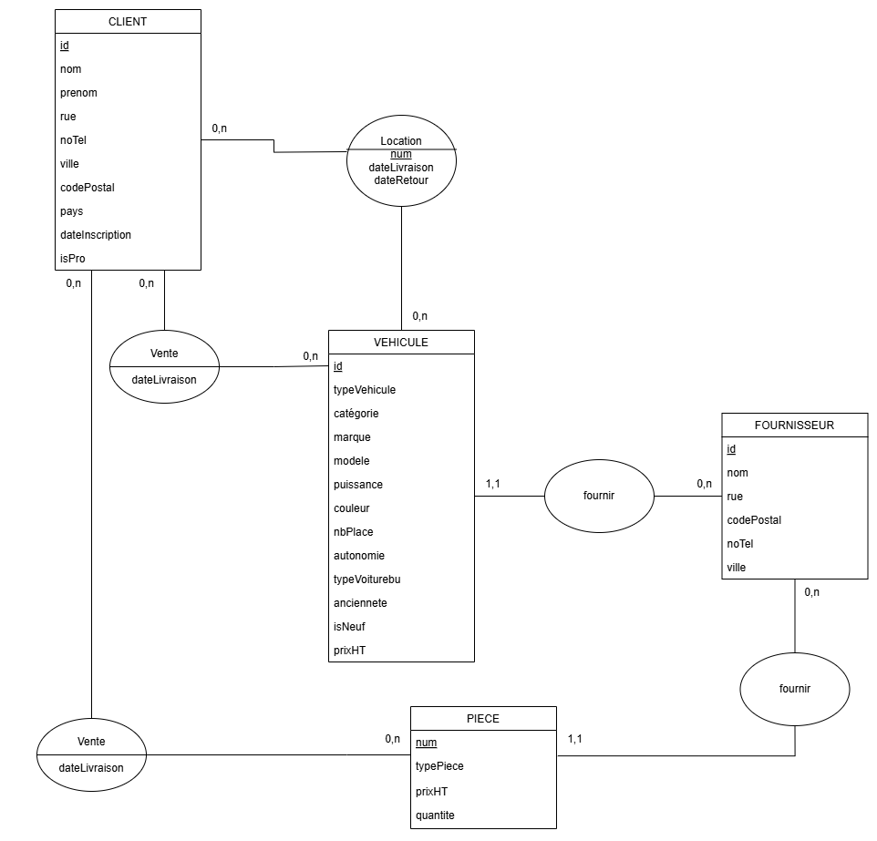

Exploitation d’une base de données
Contexte
Ce projet universitaire a été réalisé en équipe de quatre personnes sous la supervision de notre professeur de bases de données.
Objectifs
Notre mission consistait à conceptualiser et créer la base de données d’une entreprise fictive. Mon équipe et moi avons imaginé Weels R US, une entreprise spécialisée dans la vente et la location de véhicules, ainsi que dans la commercialisation de pièces détachées.
Travail réalisé
Les étapes clés de ce projet incluaient :
1. La création d’un MCD (Modèle Conceptuel de Données) pour structurer les informations de l’entreprise.
2. La traduction du MCD en MLD (Modèle Logique de Données) pour garantir la cohérence et l’intégrité des données.
3. La création de la base de données en langage SQL, accompagné d’exemples de requêtes pour manipuler les données.
MCD de la base de données de l'entreprise
Resulats
Ce projet nous a permis d’appliquer concrètement nos connaissances théoriques, notamment en : Conceptualisation de données : Nous avons développé un MCD précis, intégrant des entités comme les clients, les véhicules, les pièces détachées, et leurs relations (locations, ventes, stocks). Nous avons également pu développer nos compétences en communication et de recherche de problème en groupe.